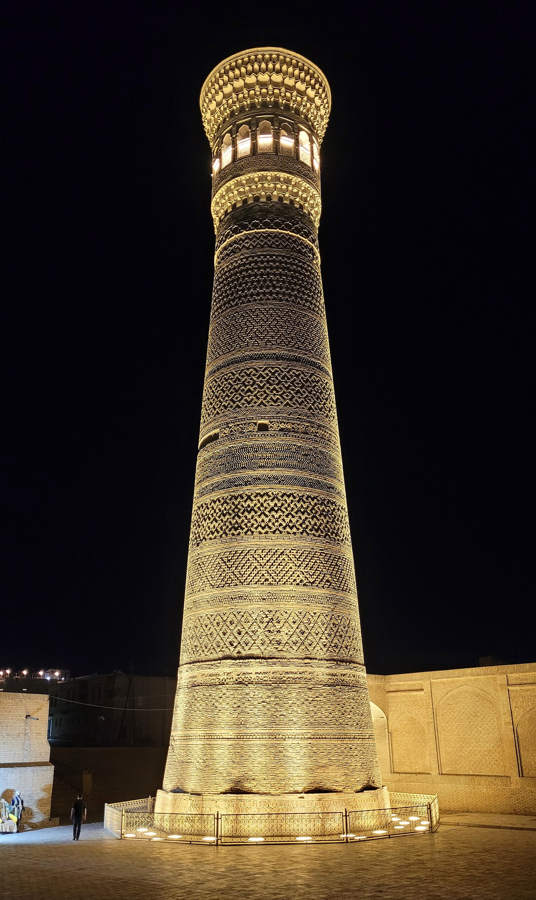

What hadith is and how it was collected: the science of hadith and Imam al-Bukhari
A hadith is a report of the sayings, actions, or tacit approvals of the Prophet Muhammad (peace be upon him) — the second primary source in Islam after the Qur'an. Each hadith has an isnad (chain of narrators) and a matn (text); scholars grade them as sahih, hasan, or da'if. Among the six main Sunni collections — the 'Kutub al-Sittah' — the most authoritative is the Sahih of Imam al-Bukhari, who was born in Bukhara in present-day Uzbekistan. A reference, facts only.

After the Qur'an, the second primary source of Islam is the hadith — the reports preserved from the Prophet Muhammad (peace be upon him). Collecting, verifying, and sifting these reports became a distinct science over the centuries. The most authoritative of these collections was compiled by a man born in what is today Uzbekistan — in Bukhara: Imam al-Bukhari. The following explains, facts only, what a hadith is, how it is graded, and who Imam al-Bukhari was.
What a hadith is
A hadith is a written report of something the Prophet Muhammad (peace be upon him) said, did, or silently approved of when it was done in his presence. The Prophet's way — his words, deeds, and approvals — is called the Sunnah; hadith are the texts that transmit the Sunnah to us. In Islamic teaching, hadith is the second primary source after the Qur'an.
Hadith and the Qur'an — the difference
The Qur'an is, in Muslim belief, the direct, literal word of God revealed to the Prophet. Hadith, by contrast, are the preserved record of the Prophet's own words and actions. The two therefore do not hold the same rank: the Qur'anic text is single and unchanging, while hadith are many, vary in reliability, and are therefore subjected to separate scrutiny.

The structure of a hadith: isnad and matn
Every hadith has two parts. The first is the isnad (or sanad): the chain of narrators running from the collector back to the Companion who heard it from the Prophet. The second is the matn: the core of the hadith — the actual words spoken or the event described. To judge a hadith's reliability, scholars first examine this chain — who narrated from whom.
The science of hadith: sahih, hasan, da'if
Scholars classify hadith by reliability: sahih (authentic, sound), hasan (good), da'if (weak), and mawdu' (fabricated). A sahih report requires upright narrators with firm memory, an unbroken chain, and no hidden defect in the text. A chain is graded by its weakest link. To assess the narrators' reliability and memory, scholars developed 'ilm al-rijal — the science of evaluating the transmitters.
The six books — the 'Kutub al-Sittah'
In the Sunni tradition the six main hadith collections are called the Kutub al-Sittah (the six books), most compiled in the 9th century CE: Sahih al-Bukhari (Imam al-Bukhari), Sahih Muslim (Muslim ibn al-Hajjaj), Sunan Abu Dawud, Jami' al-Tirmidhi, Sunan al-Nasa'i, and Sunan Ibn Majah. The collections of al-Bukhari and Muslim together are called the 'Sahihayn' and are regarded as the two most authoritative works.
Imam al-Bukhari — a son of Bukhara
The author of the most authoritative of the Sahihayn is Abu Abdullah Muhammad ibn Isma'il al-Bukhari. He was born in 810 CE (194 AH) in the city of Bukhara in present-day Uzbekistan, and died in 870 CE (256 AH) in the village of Khartank (Hartang) near Samarkand. His nisba — 'al-Bukhari' — points to his home city of Bukhara.
Sahih al-Bukhari
Imam al-Bukhari is said to have sifted a very large body of narrations — commonly cited in the traditional sources as around 600,000 — and selected only those he judged authentic. His Sahih contains roughly 7,000–7,600 hadith counting repetitions, and about 2,600 without repetition according to the count of Ibn Hajar al-'Asqalani (the exact figure varies slightly by edition). The work is distinguished by aiming to gather only sound hadith.
From Termez and other countrymen
Among the authors of the six books there is another countryman: Imam al-Tirmidhi (Abu 'Isa Muhammad ibn 'Isa, 824–892 CE) was from the city of Termez (Termiz) in the south of present-day Uzbekistan and compiled Jami' al-Tirmidhi. Thus two of the hadith collections most consulted by Muslims worldwide belong to scholars from Transoxiana — the land of present-day Uzbekistan.
The mausoleum of Imam al-Bukhari
Imam al-Bukhari's grave lies in the village of Khartank about 25 kilometres from Samarkand. In 1998 a new memorial complex — a mausoleum, mosque, and madrasa — was built there. Today it is one of the most important pilgrimage sites and historical monuments in Uzbekistan.
Why this matters for the diaspora
Knowing how hadith are graded — isnad, matn, and the levels of reliability — helps a Muslim to check, rather than simply accept, any 'the Prophet said' quotation circulating on social media. It is also, for the diaspora, a way to remember its own heritage — countrymen such as Imam al-Bukhari and al-Tirmidhi, known across the entire Muslim world. This reference gives general knowledge, not a religious ruling or fatwa; for specific religious questions, consult a qualified scholar.

Sources
- Encyclopaedia Britannica — al-Kutub al-Sittah (the six canonical hadith collections)
- Wikipedia — Muhammad al-Bukhari (born 810 CE/194 AH in Bukhara; died 870 CE/256 AH near Samarkand)
- Wikipedia — Sahih al-Bukhari (hadith counts; ~2,602 without repetition per Ibn Hajar)
- Wikipedia — Kutub al-Sittah (the six books and the Sahihayn)
- Wikipedia — Memorial Complex of Imam al-Bukhari, Hartang near Samarkand (rebuilt 1998)